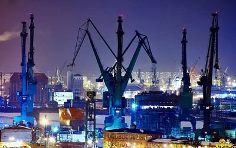
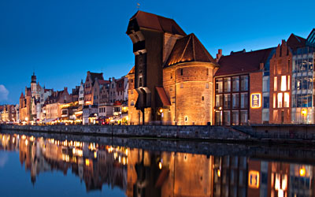
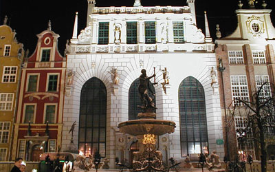
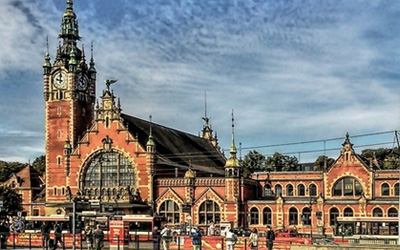
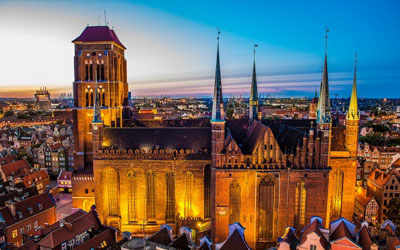
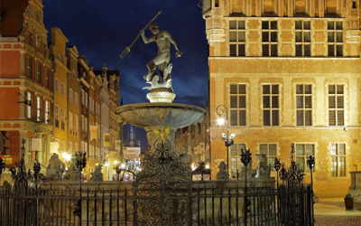

●Stocznia Gdańska
Stocznia Gdańska zlokalizowana na lewym brzegu Martwej Wisły i na Ostrowiu. (od 2006 roku: Stocznia Gdańsk SA)
– jedna z największych polskich stoczni, zlokalizowana w Gdańsku na lewym brzegu Martwej Wisły i na Ostrowiu.

●Żuraw
Żuraw - największy dźwig portowy średniowiecznej Europy, jedna z najbardziej charakterystycznych budowli Gdańska.
Położony nad Motławą, służył do przeładunku towarów i stawiania masztów na statkach. Pełnił zarazem funkcję bramy miejskiej.
Obecną formę uzyskał w latach 1442-1444.

●Dwór Artusa
Dwór Artusa - przez wiele lat był jednym z najwspanialszych tego typu obiektów w Europie północnej.
Dwory Artusa powstawały licznie w całej Europie a szczególnie w miastach hanzeatyckich,
jako miejsca spotkań zamożnego patrycjatu, kupców i rzemieślników.

●Gdański Dworzec
Gdański Dworzec

●Bazylika Mariacka
Bazylika Mariacka zwana "koroną miasta Gdańska" - Kościół Wniebowzięcia Najświętszej Marii Panny.
Największa ceglana, gotycka świątynia w Europie, powstawał 159 lat w kilku etapach w latach 1343-1502.

●Fontanna Neptuna
Fontanna Neptuna - została zaprojektowana przez Abrahama van den Blocke.
Podstawowym źródłem strumieni wodnych jest trójząb trzymany przez władcę mórz i oceanów w prawicy,
znajdujące się u jego stóp konie morskie oraz krawędź postumentu.